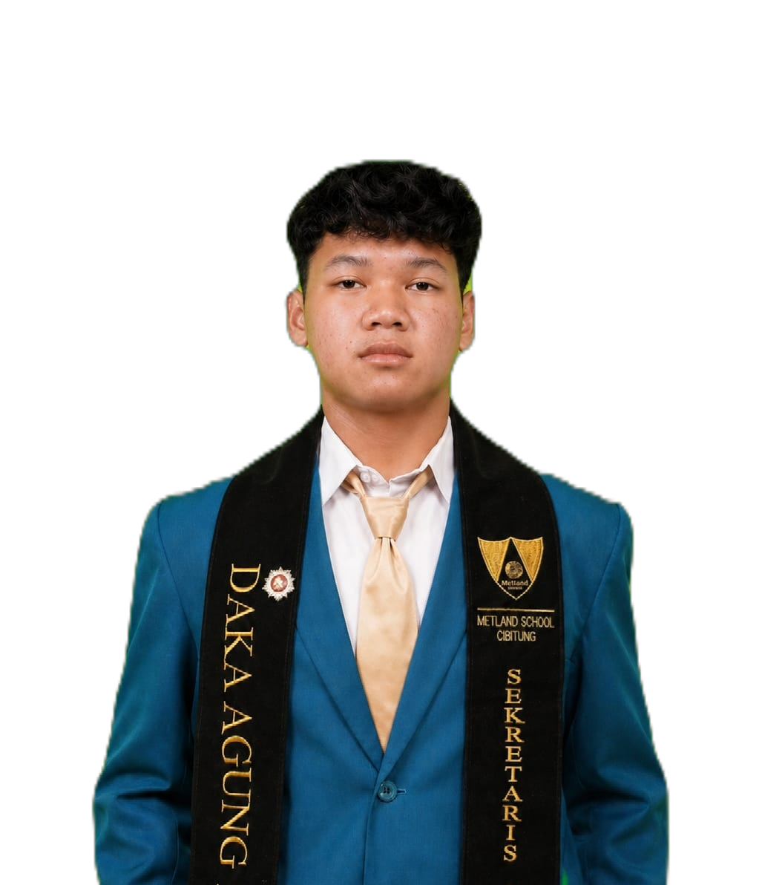

A 16-year-old Web Developer and IT student from SMK Metland Cibitung, blending coding skills with strong leadership as an Event MC and Student Council Secretary.
Berpengalaman menangani proyek website kompleks. Menguasai HTML, CSS, Tailwind, PHP Native, Laravel.
Dipercaya sebagai Master of Ceremony (MC) di berbagai acara besar sekolah seperti METFEST, Metschoorama.
Menjabat Sekretaris INTI OSIS, Ketua Ekskul Seni, pengelola bisnis Kova Corner, dan Ketua Pelaksana berbagai acara.
National Excellent Student Summit (NESS) 2026 - Universitas Indonesia
Festival Cipta Prestasi 2026 - Balai Kota Tangerang Selatan
Festival Olahraga Tradisional 2025 Jawa Barat & ISC President University
Tingkat Kabupaten Bekasi Tahun 2024
Menangani ratusan surat menyurat (SMP se-Kab. Bekasi). Sekretaris untuk Metschoorama & METFEST.
Mengelola penampilan paduan suara, tari tradisional, dan modern dance.
Memimpin jalannya kompetisi antarkelas selama 3 hari berturut-turut.
Beberapa proyek website kompleks yang telah saya kembangkan.
Proyek lainnya: ruzlymerch, Sembilansatu, Kantin, booklist, Ninetyoneclass.